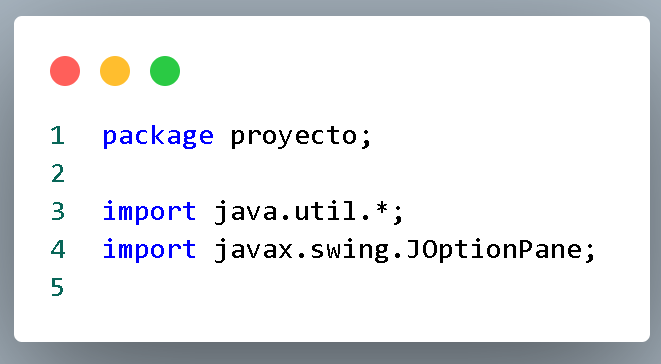
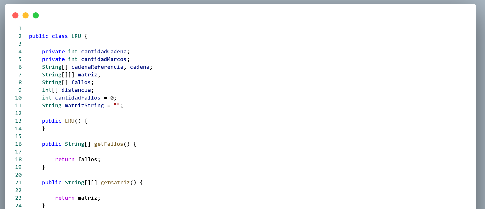
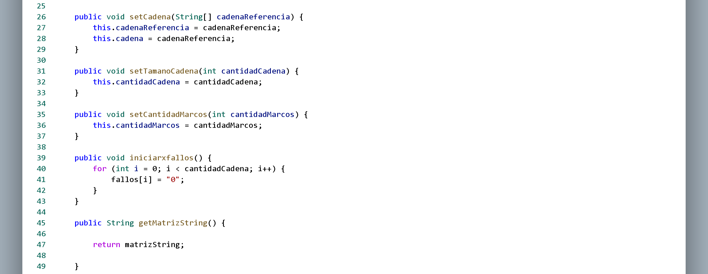
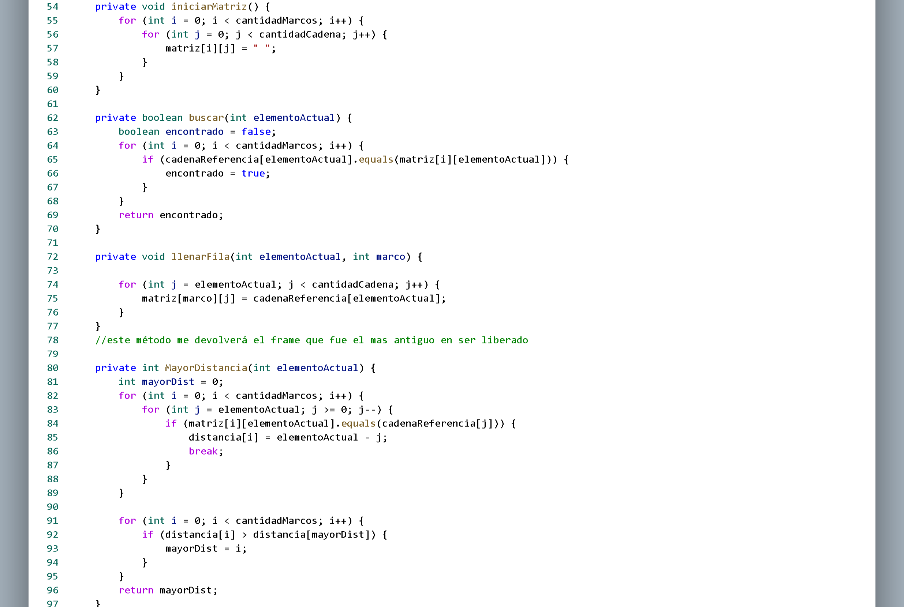
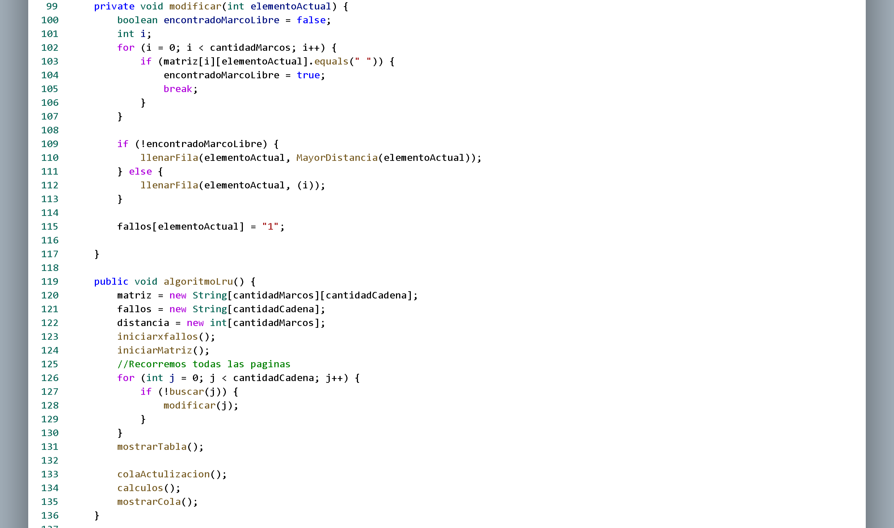
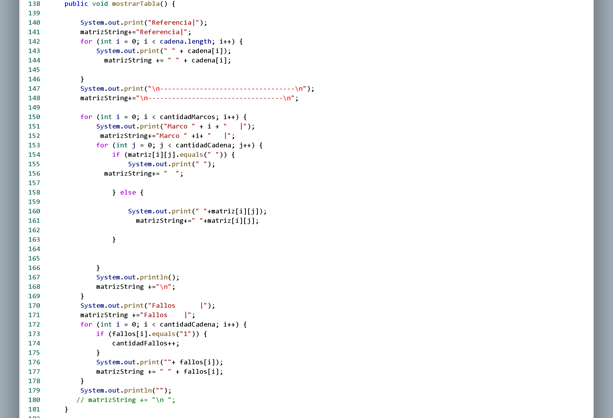
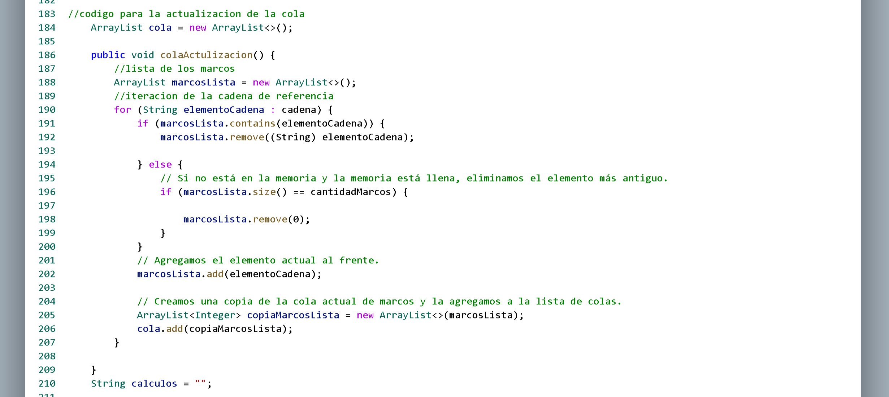
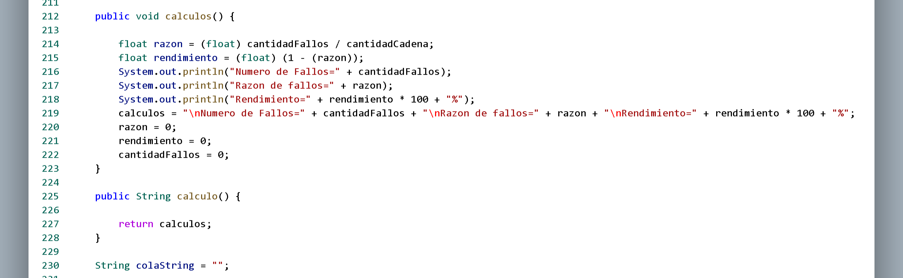
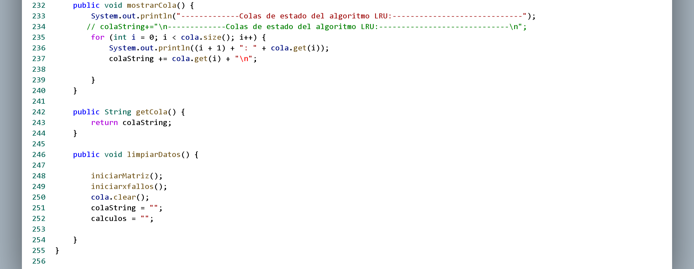

|
Funcionamiento de código
Lru.java
Librerias

El paquete java.util.* en Java ofrece clases de utilidad estándar,
como colecciones y clases de fecha. Al importar *, se incluyen todas
las clases y subpaquetes dentro de java.util. Por otro lado, javax.swing.JOptionPane
pertenece a Java Swing, proporcionando métodos estáticos para la creación de cuadros
de diálogo en interfaces gráficas de usuario. Estos paquetes son ampliamente utilizados
en aplicaciones Java para gestionar colecciones y crear elementos de interfaz gráfica.
Clase Lru

La clase LRU en Java implementa el algoritmo Least Recently Used (LRU) para manejar fallos de página en sistemas de memoria. Utiliza atributos como la cadena de referencia, la cantidad de marcos de página, una matriz para la memoria física, y un array para registrar fallos. Sus métodos brindan funcionalidades esenciales, como inicialización de estructuras, búsqueda y actualización en caso de fallos. También calcula estadísticas y actualiza colas para visualizar el estado del algoritmo.

Estos métodos en Java (setCadena, setTamanoCadena, setCantidadMarcos, iniciarxfallos, y getMatrizString) son parte de una implementación del algoritmo Least Recently Used (LRU) para el manejo de fallos de página en sistemas de memoria. Se utilizan para configurar parámetros iniciales, como la cadena de referencia, el tamaño de la cadena y la cantidad de marcos de página, así como para inicializar estructuras de datos y obtener representaciones en cadena de la matriz utilizada en el algoritmo.

Estos métodos son parte de la implementación del algoritmo Least Recently Used (LRU) en Java. iniciarMatriz inicializa una matriz para representar los marcos de página. buscar, llenarFila y MayorDistancia son funciones clave en la lógica de LRU: buscar determina la presencia de un elemento en los marcos, llenarFila actualiza la matriz en caso de un fallo de página, y MayorDistancia encuentra el marco más antiguo para reemplazarlo.

El método modificar en el algoritmo LRU se encarga de gestionar la página actual. Primero, verifica si hay un marco libre. Si todos están ocupados, utiliza la función MayorDistancia para encontrar el marco más antiguo y lo llena con la página actual. Luego, marca el fallo de página en el array fallos. El método algoritmoLru implementa el algoritmo completo, utilizando la matriz de marcos, el array de fallos y funciones auxiliares. Después de procesar todas las páginas, se muestra la tabla, la cola de actualización y se calculan las estadísticas de fallos y rendimiento. Este conjunto de funciones constituye un algoritmo de reemplazo de página eficiente en términos de uso de memoria.

El método mostrarTabla en la implementación del algoritmo LRU se encarga de imprimir la tabla que representa el estado de los marcos y los fallos de página en cada iteración del algoritmo. Primero, muestra la línea de referencias, seguida de una línea separadora. Luego, presenta cada marco con sus respectivas páginas en cada columna, dejando espacios para las páginas aún no cargadas. Finalmente, muestra la línea de fallos, indicando con "1" aquellos lugares donde se ha producido un fallo de página

El método colaActulizacion, actualiza la cola (cola) que refleja el estado de los marcos en cada iteración. Utiliza una lista (marcosLista) para rastrear los elementos presentes en los marcos, ajustándola durante cada iteración de la cadena de referencia. La cola almacena copias de esta lista, proporcionando un historial del contenido de los marcos a lo largo del algoritmo. La variable calculos se mantiene como una cadena vacía, sin participar en este método específico.

En el método calculos, calcula la cantidad de fallos, la razón de fallos y el rendimiento del algoritmo. Estos resultados se imprimen en la consola y se almacenan en la variable calculos, que luego se utiliza en el método calculo para devolver la información calculada en formato de cadena. La variable colaString se mantiene como una cadena vacía y no participa en este método específico.

En el método mostrarCola, se imprime en la consola la información sobre las colas de estado del algoritmo LRU, utilizando la lista cola que almacena los cambios en los marcos de página a lo largo del tiempo. La variable colaString se actualiza con la misma información pero en formato de cadena, que luego se puede recuperar utilizando el método getCola. El método limpiarDatos se encarga de restablecer las estructuras de datos y variables para preparar el objeto LRU para una nueva ejecución.
|